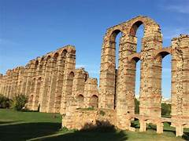
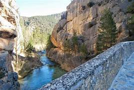

Rutas en Extremadura
Descubre las mejores rutas para explorar la belleza de Extremadura.
Ruta del Jerte

Una hermosa ruta a lo largo del Valle del Jerte, famosa por sus cerezos en flor.
Ruta de la Plata
Un recorrido histórico que sigue el antiguo camino romano.
Ruta del Tajo
Explora los paisajes a lo largo del río Tajo, el más largo de la península ibérica.